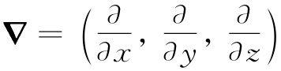

让我们把所得到的关于矢量微积分的结果做个总结。这些结果，实际上是第2章和第3章的要点：
1. 算符∂/∂x，∂/∂y，∂/∂z可以认为是矢量算符▽的三个分量，而把这一算符

作为矢量处理后，从矢量代数所获得的那些公式都是正确的。
2. 标量场在两点的差值等于该标量梯度的切向分量沿连接（1）和（2）这两点间任意曲线的线积分：
3. 任意矢量的法向分量在一个闭合曲面上的面积分等于该矢量的散度对该闭合曲面内体积的积分：
∫闭合曲面 C·nda=∫曲面内体积 ▽·CdV. （3.43）
4. 任意矢量的切向分量绕一闭合回路的线积分，等于该矢量旋度的法向分量对以该回路为边界的任意曲面的面积分，即
∫边界 C·ds=∫曲面 （▽×C）·nda. （3.44）
[1] 下面的推导也同样适用于任何一个直角平行六面体。